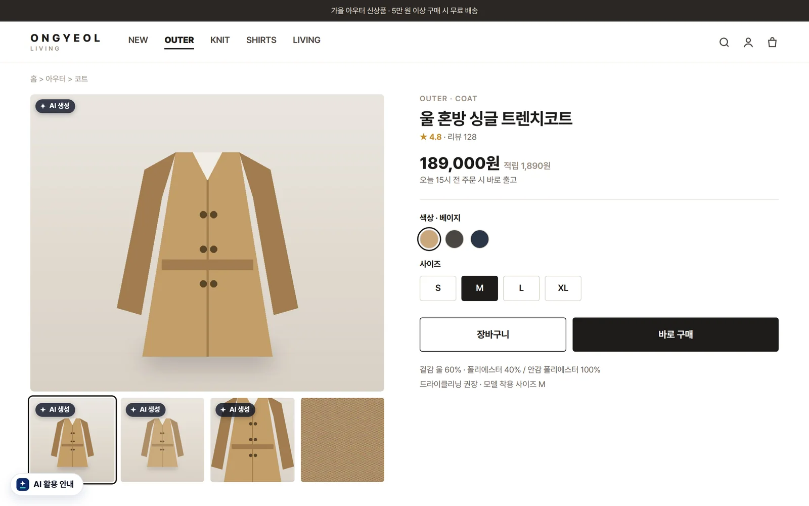

AI가 만든 콘텐츠,표시부터 관리까지 AIMarker 하나로.
광고 · 상세페이지 · SNS 콘텐츠를 내보내기 전에 AI 사용 근거, 표시 요건, 광고 표현 위험을 자동으로 점검하고 담당자 승인과 증빙 보고서까지 한 번에 끝냅니다.

만드는 속도는 AI가 바꿨습니다.
검수는 아직 그대로입니다.
광고비는 온라인으로 몰리고, 부당광고 적발은 늘고, AI로 만든 인물 · 이미지를 겨냥한 규칙이 생겼습니다. 소재 하나를 내보낼 때마다 사람이 눈으로 확인하는 방식으로는 따라갈 수 없습니다.
일반식품 온라인 부당광고 적발
건강기능식품으로 오인하게 한 광고가 절반 가까이(46.7%)
출처: 식품의약품안전처 국정감사 제출 자료(소병훈 의원실), 아이뉴스24 2026.9.28 보도
매체 심사 반려
표현 하나로 반려되면 재작업 · 일정 지연이 캠페인 전체로 번집니다.
사람 눈 검수
소재 500개 × 5분이면 한 달 40시간이 넘습니다. 바쁜 날엔 빠집니다.
규제 업종 리스크
식품 · 화장품 · 의료 · 금융은 표현 하나로 접속 차단 · 행정처분까지 갑니다.
증빙이 없음
누가 언제 무엇을 확인 · 승인했는지 남지 않아 광고주 · 감사 요청에 답하기 어렵습니다.
AI 콘텐츠 제작은 빠르게,
검수와 관리는 AIMarker로.
올리면 자동으로 점검하고, 고칠 문구를 바로 적용하고, 광고주 승인과 보고서까지 한 흐름으로 끝납니다.
소재 업로드
문구를 붙여 넣거나 이미지를 끌어다 놓으면 끝. 업종 · 협찬 · AI 사용은 자동으로 알아봅니다.
업종 자동 · 출처 판별위험 후보 · 근거
6가지를 한 번에 보고, 위험 점수와 '수정 후 출고 · 확인 후 출고' 같은 결정을 냅니다.
KR-AdLaw 규칙 팩내부 확인 · 광고주
한 번에 고치기로 수정하고, 로그인 없는 승인 링크로 광고주 답을 받습니다.
답이 오면 자동 반영표시 · 보고서 · 원장
AI 이미지에 표시를 넣어 내려받고, 보고서 해시를 원장에 남겨 누구나 검증합니다.
PDF · 검증용 파일AI 표시는 한 항목일 뿐, 광고주 누구에게나 필요한 점검까지
AI기본법 표시 의무는 AI 서비스 사업자 몫이지만, 광고 표현 · 협찬 표시 · 가상인물 규칙은 모든 광고주에게 적용됩니다.
AI 사용 근거 · 표시
파일 속 출처 기록(C2PA · IPTC) · 생성 도구 흔적을 읽고, 필요한 표시와 위치를 제안합니다.
가상인물 · 딥페이크
AI로 만든 인물 · 목소리가 추천 · 후기를 말하면 표시와 표현을 함께 점검합니다.
업종별 금지 · 과장 표현
식품 · 건강기능식품 · 화장품 · 의료 · 금융 규칙 팩. 면책 문장은 빼고 쪼갠 표현도 찾습니다.
추천 · 보증(뒷광고)
대가를 받은 콘텐츠에 '광고 · 협찬' 표시가 첫머리에 눈에 띄게 있는지 봅니다.
저작권 · 초상권 단서
출처 불명 이미지 · 다른 브랜드 이름 빌리기 · 유명인 추천 표현을 확인 요청합니다.
브랜드 가이드
쓰지 않을 말 · 꼭 넣을 문구를 규칙으로 넣어 대행사 · 팀 누구든 같은 기준으로.
검수 · 승인 · 증빙이 한 화면에
아래는 실제 검수 작업 공간 화면입니다. 숫자 · 브랜드는 예시입니다.

올리면 바로, 고칠 곳과 고칠 말까지
- 문구를 멈추면 자동 점검, 업종 · 협찬 · AI 사용은 스스로 알아봄
- 위험 점수와 결정(수정 후 출고 · 확인 후 출고 · 전문가 검토 권장)
- 후보마다 근거 법령과 바꿀 말, '한 번에 고치기'로 일괄 수정
- 이미지 출처 판별과 AI 표시 넣어 내려받기(파일은 서버로 보내지 않음)

광고주는 링크 하나로, 답은 자동으로
- 로그인 · 설치 없이 카카오톡 · 메일로 받은 링크에서 승인 또는 수정 요청
- 남은 위험 후보를 함께 보여 줘 '알고 승인'한 기록이 됨
- 답은 작업 공간에 자동 반영, 승인 뒤 문구가 바뀌면 다시 요청하라고 알림
- 승인 시각 · 승인한 분이 원장에 남음

광고주 · 감사에 그대로 내는 보고서
- 기간 · 브랜드별 검수 · 수정 · 승인 결과를 한 장에, PDF로 저장
- 보고서 해시를 서버 시각과 함께 원장에 기록
- 검증용 파일을 aimarker.kr/verify/ 에 올리면 누구나 위변조 여부 확인
- 대행사는 자사 이름의 '안전 검수 보고서'로 고객사에 납품(Business)

표시는 사람이 붙이지 않아도 됩니다
- 코드 한 줄이면 AI 이미지에 'AI 생성' 태그가 자동으로 붙음
- 파일 속 출처 기록 · 파일 이름 흔적 · 운영자 표시(data-ai)로 판단
- 사이트 'AI 활용 안내' 배지는 아임웹 앱 · 코드 한 줄로 무료
- 방문자 정보 · 쿠키를 쓰지 않음
사람 손은 최소로, 기준은 늘 같게
같은 엔진이 작업 공간 · 사이트 · 사내 시스템에서 똑같이 돌아갑니다. 자동화 흐름에 한 단계만 끼우면 됩니다.
API · 시트 · n8n · 에이전트
콘텐츠 관리 도구 · 구글 시트 함수 · n8n · Make · AI 에이전트 도구로 게시 전 관문을 만듭니다.
무료 키 받기{ "action": "am.check", "key": "amk_…", "text": "의사가 추천하는 다이어트 젤리, 먹기만 해도 살 빠져요" }
→ { "score": 72, "decision": "fix", "indName": "일반식품", "auto": true,
"findings": [{ "id": "F05", "lv": 3, "t": "의사가 추천", "law": "식품표시광고법 제8조", "reps": ["(삭제)"] }, …] }검수 시간을 돈으로 계산해 보세요
반려 · 재작업 · 행정처분을 피하는 효과는 넣지 않은 보수적인 계산입니다. 파일럿에서 실제 값을 함께 잽니다.
예시 계산이며 결과를 보장하지 않습니다. 부가세 별도.
이 숫자로 파일럿 상담소재를 많이 내보내는 곳일수록 크게 아낍니다
광고대행사 · 제작사
한 달 수백 개 소재의 검수 · 반려 · 납품 증빙을 줄이고, 검수 보고서를 새 상품으로.
- 광고주 승인 링크
- 자사 이름 보고서
브랜드 · 이커머스
뷰티 · 건강식품 · 의료 · 금융처럼 표현 하나가 위험한 업종의 상세페이지 · SNS.
- 업종 규칙 팩
- 브랜드 가이드
플랫폼 · 광고 매체
입점사 · 광고주가 올리는 순간 점검해 심사 인력을 줄이고, 부가서비스로 팝니다.
- 일괄 점검 API
- 화이트라벨
AI 서비스 사업자
AI기본법 제31조 사전 고지 · 생성물 표시를 서비스 안에 넣고, 이행 기록을 남깁니다.
- 표시 문구 API
- 이행 원장
쓸수록 정확해지고, 쉽게 따라 할 수 없는 구조
규칙은 공개 코드에 두지 않고 서버 엔진에서만 돌립니다. 검수가 쌓일수록 규칙 · 판정 데이터 · 승인 기록이 함께 쌓입니다.
틀릴 수 있다는 것을 전제로 설계했습니다
자동 판정은 완벽하지 않습니다. 그래서 후보와 근거만 내고, 결정은 사람이, 기록은 바뀌지 않게 남깁니다.
후보와 근거만
위반이라고 단정하지 않고, 근거 법령과 바꿀 말을 함께 보여 줍니다. 법률 자문이 아닙니다.
문구는 저장하지 않음
점검할 때만 문구를 보내고 남기지 않습니다. 이미지는 서버로 보내지 않습니다.
바뀌지 않는 기록
승인 · 보고서 해시를 서버 시각과 함께 원장에 남겨 누구나 검증합니다.
오류는 바로잡음
틀린 판정은 버튼 한 번으로 알려 주세요. 규칙 팩을 고칠 때 씁니다.
시작하기 전에 궁금한 것들
AIMarker는 무엇을 하나요?
광고 · 상세페이지 · SNS 콘텐츠를 내보내기 전에 AI 사용 근거 · 표시 요건 · 광고 표현 위험을 자동으로 점검하고, 고칠 문구 적용 · 광고주 승인 · 보고서 · 원장 기록까지 한 흐름으로 처리하는 AI 콘텐츠 출고 관리 플랫폼입니다.
AI를 썼다고 밝히면 오히려 불리하지 않나요?
AIMarker의 목적은 'AI 사용 고백'이 아니라 내보내기 전에 위험을 줄이는 것입니다. 표시가 꼭 필요한 경우(AI로 만든 인물이 추천하는 광고, 실제처럼 보이는 AI 이미지 등)에만 필요한 표시를 권하고, 그 밖에는 광고 표현 · 협찬 표시처럼 모든 광고주에게 적용되는 규칙을 점검합니다.
우리 회사도 AI기본법 표시 의무 대상인가요?
AI기본법 제31조는 AI 제품 · 서비스를 이용자에게 직접 제공하는 사업자의 의무입니다. AI로 광고를 만들기만 한 일반 광고주는 대상이 아닐 수 있지만, 표시광고법 · 업종별 광고 규제 · 추천 · 보증 심사지침(가상인물 · 경제적 이해관계 표시)은 적용됩니다. AI 서비스 사업자라면 사전 고지 · 생성물 표시 체계도 함께 점검합니다. 이 안내는 법률 자문이 아닙니다.
판정은 얼마나 믿을 수 있나요?
근거가 분명한 표현만 짚고, '질병의 예방 및 치료를 위한 의약품이 아닙니다' 같은 면책 문장은 빼며, 띄어쓰기 · 기호로 쪼갠 표현도 찾습니다. 배포할 때마다 정답을 정해 둔 시험 문장으로 자동 채점하고, 이용자의 '맞아요 · 틀려요' 의견을 규칙별로 모아 고칩니다. 그래도 최종 판단은 담당자가 하고, 애매하면 전문가 검토를 권합니다.
소재와 데이터는 어떻게 다루나요?
작업 공간 데이터는 이용자의 브라우저에만 저장됩니다. 점검할 때 문구만 서버로 보내고 저장하지 않으며, 이미지는 서버로 보내지 않습니다. 승인 링크를 만들 때만 그 소재의 문구 · 점검 요약을 90일 보관하고, 원장에는 해시와 시각만 남깁니다. 동의 없이 학습에 쓰지 않습니다.
무료 사이트 진단에서 AI 사용이 0건으로 나오면 안전한가요?
아닙니다. 아임웹 같은 빌더는 올린 이미지의 파일 기록을 지우는 경우가 많아, 기록이 없다고 AI를 쓰지 않았다는 뜻이 아닙니다. 그래서 진단은 '없음'이라고 말하지 않고, 기록이 지워진 이미지는 '확인 불가'로 따로 세어 확인됨 · 높음 · 확인 필요 · 낮음 네 단계로 알려 드립니다.
팀으로 쓰려면 어떻게 하나요?
2026년 12월부터 유료 파일럿을 엽니다. 팀 공유 · 클라우드 보관 · 다단계 승인 · 자사 이름 보고서를 함께 씁니다. Starter 월 99,000원 · Business 월 290,000원 · Enterprise 월 990,000원부터(출시 예정가, 부가세 별도)이며 파일럿 조건은 상담으로 정합니다.
사내 시스템 · 자동화 도구와 연동되나요?
네. 무료 API 키(하루 300회)로 콘텐츠 관리 도구 · 구글 시트 함수 · n8n · Make · AI 에이전트에서 같은 엔진을 부를 수 있습니다. 예시 코드는 개발자 페이지에 있습니다.
다음 캠페인부터,
내보내기 전에 AIMarker로.
지금 무료로 소재를 올려 보세요. 팀으로 쓰려면 파일럿을 신청해 주세요. 영업일 하루 안에 연락드립니다.
AIMarker 는 성균관컨설팅이 만들고 운영합니다. AI 표시 문구 기준은 한국AI윤리위원회를 따릅니다.